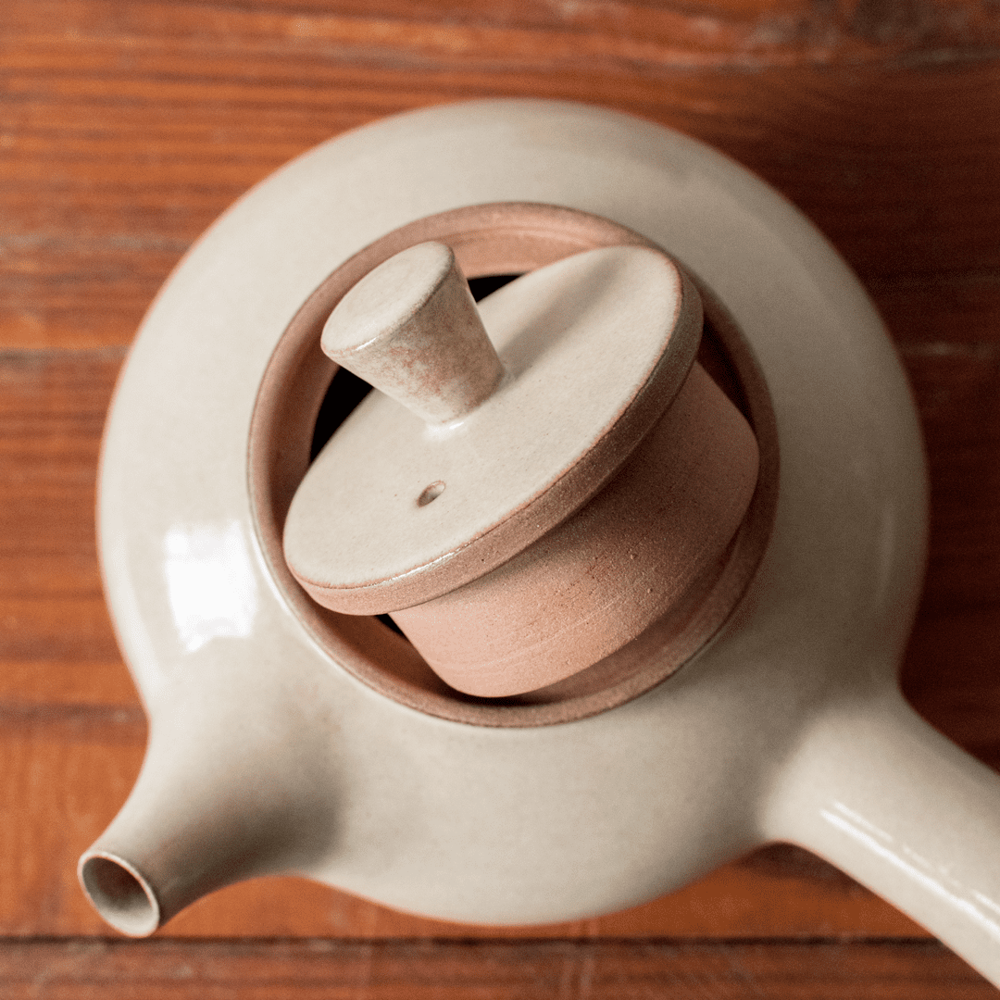

Embarcarse en la elaboración de una tetera de cerámica es sumergirse en un universo de creatividad y destreza técnica. Cada paso, desde el diseño inicial hasta el toque final del esmalte, resulta fundamental para dar vida a una pieza que no solo sea funcional, sino también estéticamente cautivadora.
En este artículo, nos adentraremos en los fundamentos de la fabricación de teteras de cerámica, recorriendo un camino desde la selección de la arcilla hasta los detalles finales del acabado. Además, compartiremos algunos consejos prácticos para perfeccionar tu técnica y alcanzar resultados excepcionales.
Eligiendo la arcilla adecuada: La base de toda gran tetera reside en la arcilla. Seleccionar el tipo de arcilla adecuado es crucial para garantizar la funcionalidad, durabilidad y estética de la pieza final.
Dominando las técnicas de modelado: Amasar, pellizcar, construir con rollos, tornear... Existen diversas técnicas de modelado que te permitirán dar forma a tu tetera. Familiarízate con cada una de ellas y explora sus posibilidades creativas.
Uniendo las piezas: Una vez que las diferentes partes de la tetera, como el cuerpo, la tapa y el asa, estén creadas, llega el momento de unirlas con cuidado. Asegúrate de que las uniones sean firmes y herméticas para evitar derrames.
Refinamiento y detalles: Es hora de darle un toque de elegancia a tu tetera. Refina las imperfecciones del modelado, suaviza las superficies y agrega detalles decorativos que reflejen tu estilo único.
Cocción y esmaltado: La magia se produce en el horno. Una vez seca la pieza, llega el momento de la cocción, un proceso que consolida la estructura de la arcilla y la prepara para recibir el esmalte. El tipo de esmalte que elijas determinará el acabado final, tanto en términos de color como de textura.
Toques finales: Una vez esmaltada y cocida, tu tetera estará lista para recibir los toques finales. Puedes bruñirla para darle un brillo intenso, decorarla con pintura o simplemente disfrutar de su belleza natural.
Recuerda que la elaboración de una tetera de cerámica es un proceso que requiere paciencia, práctica y dedicación. No te desanimes si los primeros resultados no son perfectos. Con el tiempo y la experiencia, tu técnica se irá perfeccionando y podrás crear piezas únicas y duraderas que te llenarán de satisfacción.
Consejos prácticos:
Comienza con diseños simples: No te aventures en proyectos demasiado complejos al principio. Practica con formas básicas y ve aumentando la dificultad a medida que ganes experiencia. Tómate tu tiempo: No apresures el proceso. Cada paso requiere atención y cuidado para obtener un resultado óptimo. No temas experimentar: La cerámica es un arte que invita a la experimentación. Prueba diferentes técnicas, esmaltes y diseños para encontrar tu propio estilo. Busca inspiración: Observa el trabajo de otros ceramistas, visita talleres y museos, y no dudes en pedir consejos a expertos. Disfruta del proceso: La creación de una tetera de cerámica debe ser una experiencia placentera. Disfruta del trabajo con las manos, de la conexión con la arcilla y de la satisfacción de ver tu pieza terminada.